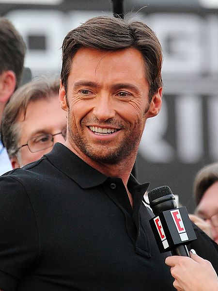

Trayectoria Profesional
Hackman, inmediatamente de finalizar los estudios de artes escénicas en la WAAPA, en la misma noche de su graduación, durante su última actuación en la Academia, recibió una llamada telefónica ofreciéndole un papel en la serie dramática Correlli del canal ABC Australia. «Yo estuve técnicamente en paro durante trece segundos» afirma el actor, referenciado por la actriz australiana Denise Roberts. Fue el primer trabajo profesional importante de Jackman a pesar de que la serie duró solo una temporada. Tras la serie Corelli, intervino en diferentes obras de teatro y musicales, como en el musical La bella y la bestia en el papel de Gastón en 1996, en la producción Sunset Boulevard, y entre otras, en la obra Oklahoma en 1998, una producción del Royal National Theatre, que le valió una nominación a los Premios Olivier al Mejor Actor en un musical. Pero fue hasta 1999, que Jackman obtuvo el papel de Wolverine en la trilogía de X-Men, reemplazando al actor Dougray Scott, cuando alcanzó la fama internacional. Ese mismo año, también realiza Kate y Leopold y Swordfish que le consolidan en diferentes tipos de papeles. Tras ello, protagonizó películas de diferentes géneros, como Van Helsing (2004), o como actor de voz y estuvo trabajando todo un año en la obra musical de Broadway The Boy From Oz, basada en la historia del compositor Peter Allen que finalmente lo hicieron merecedor del Premio Tony al mejor actor. En su trayectoria, presentó cuatro veces seguidas los premios Tony, ganando un Emmy al mejor presentador. El 22 de febrero de 2009, fue el anfitrión en la 81 entrega de los Premios Óscar que se realizó en el Teatro Kodak. En 2022, se anunció que Jackman volverá a interpretar a Wolverine, en la tercera parte de Deadpool, ahora dentro del MCU. Productor En 2005, Jackman se unió con su ayudante John Palermo para formar una compañía de producción, llamada Seed Productions, cuyo primer proyecto fue Viva Laughlin en 2007. La esposa de Jackman Deborra-Lee Furness también participa en la empresa. La compañía realiza películas y series independientes, y se ocupó de la realización de la película X-Men Origins: Wolverine (2009). La empresa tiene su sede en Fox, Australia, con el objetivo de montar películas de modesto presupuesto para aprovechar el talento local en el país de origen de Jackman.
Estudios
En 1986, Jackman se graduó en el National Institute of Dramatic Art (NIDA) en Sydney, Australia. En 1991, se graduó en la Western Australian Academy of Performing Arts (WAAPA) en Perth, Australia.

Películas en que trabajó
Año / Título original / Personaje
- Año 1999 - Erskineville Kings
- Año 1999 - Paperback Hero Jack Willis
- Año 2000- X-Men (Logan / Wolverine)
- Año 2001- Kate y Leopold
- Año 2001- Someone like You
- Año 2001- Swordfish
- Año 2003 - X-Men 2(Logan / Wolverine)
- Año 2004 - Profile of a Serial Killer
- Año 2004 - Van Helsing Gabriel Van Helsing
- Año 2004 - Van Helsing: The London Assignment
- Año 2004 - (Voz) Sharon Bridgeman
- Año 2005 - Stories of Lost Souls
- Año 2005 - (Segmento "Standing Room Only")
- Año 2006- Happy Feet
- Año 2006- (Voz) George Miller
- Año 2006- Flushed Away Roddy
- Año 2006- (Voz) David Bowers
- Año 2006- The Prestige Robert Angier
- Año 2006- The Fountain Tomas / Tommy / Tom Creo
- Año 2006- Scoop Peter Lyman
- Año 2006- X-Men: The Last Stand (Logan / Wolverine)
- Año 2008 - Deception wyatt Bose
- Año 2008 - (También productor) Marcel Langenegger
- Año 2009 - X-Men Origins: Wolverine
- Año 2011 - X-Men: First Class
- Año 2011 - X-Men: First Class
- Año 2011 - X-Men: First Class
- Año 2012 - Katy Perry: Part Of Me 3D
- Año 2013 - Movie 43
- Año 2014 - X-Men: Days of Future Past (Logan / Wolverine)
- Año 2015 - Chappie
- Año 2016 - Eddie the Eagle
- Año 2016 - X-Men: Apocalipsis (Logan / Weapon X / Wolverine)
- Año 2017 - Logan James "Logan" Howlett / Wolverine / X-24
- Año 2018 - Deadpool 2 Logan / Wolverine
- Año 2019 - Missing Link Sir Lionel Frost
- Año 2021 - Reminiscence Lisa Joy
- Año 2024 - Deadpool 3 Logan / Wolverine